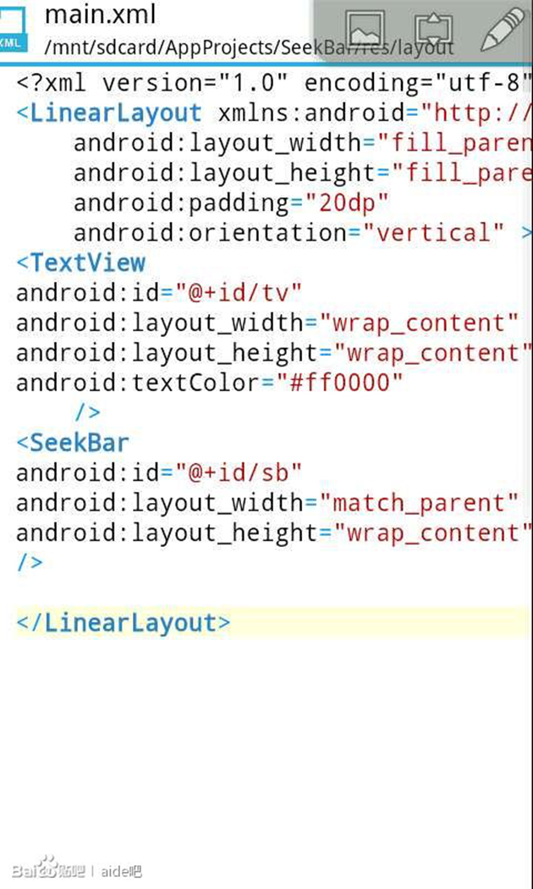
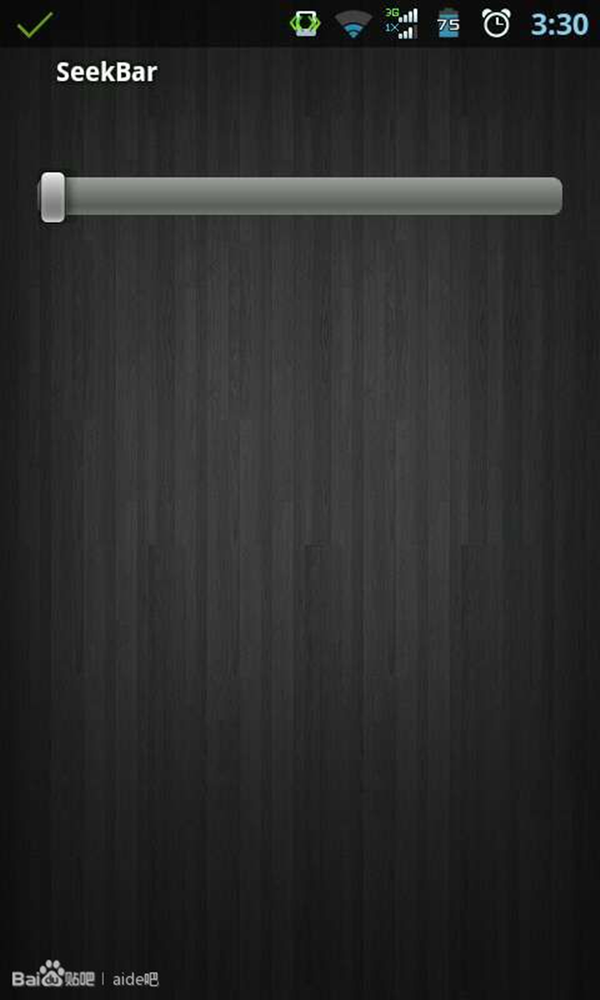
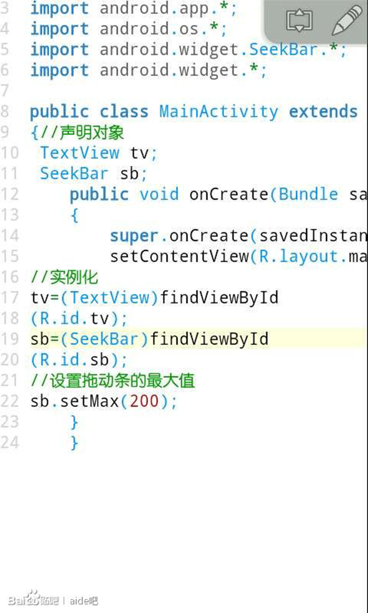
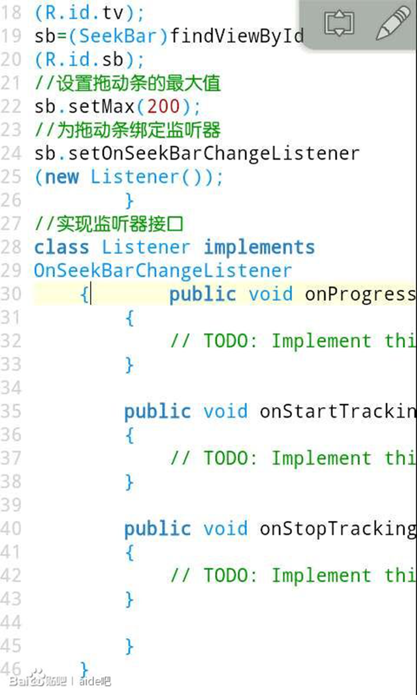
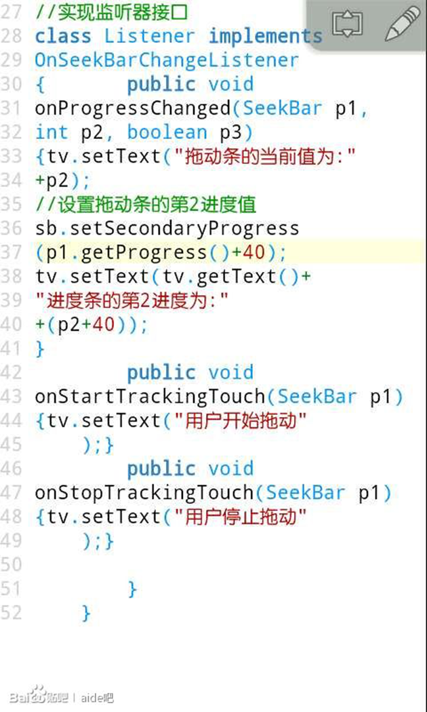
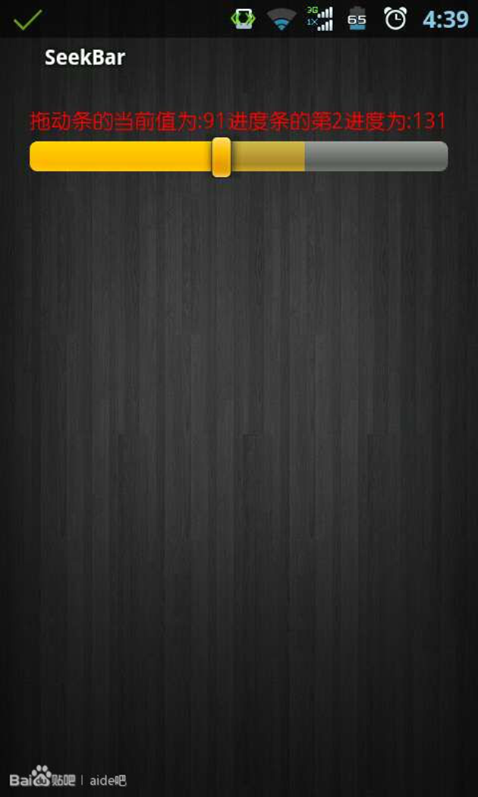

SeekBar介绍(21课)
SeekBar拖动条和我们前面所讲过的ProgressBar进度条差不多，不过可以由用户自由拖动改变进度值，我们在播放器里面经常见到。

1.新建一个项目，首先我们在我们的布局文件中定义一个SeekBar，添加一个id。里面定义一个标签方便进行观察拖动条的进度值。

2.我们运行我们的项目，如图这个就是我们的拖动条，我们可以自己手动去改变拖动条的进度值。

3.我们接下来打开我们的java代码，声明对象，实例化，setMax()方法是设置拖动条的最大值，默认值是100，跟我们前面所学的进度条是一样的。

4.然后我们定义一个内部类实现OnSeekBarChangeListener接口对SeekBar进行监听，我们在我们的波浪线处长按点击Fix修复然后点击Implements all abstract methods实现所有抽象方法，这样开发工具将会自动帮我们重写里面的抽象函数，跟电脑端的eclipse一样方便，包括我们前面讲的单选框，多选框，按钮等监听器都可以由开发工具自动帮我们写上。然后我们为拖动条绑定监听器。

5.接下来我们来看我们的监听器，当进度条的值被改变时候会触发onProgressChanged方法，里面3个参数，第一个参数p1是触发该监听器的SeekBar对象，第2个参数p2为整型，表示进度条的当前值，第3个参数p3是一个布尔型，如果由用户拖动进行改变进度条的值该值为真，如果我们自己在代码中使用setProgress改变进度值，该值为假。我们让标签显示当前进度值，setSecondaryProgress方法是设置进度条的第2进度值，就是颜色稍微浅一点的那层，getProgress方法是取得进度条的当前进度值，也就是p2。我们让第2进度值比进度值大40。然后是onStartTrackingTouch，用户进行拖动会触发该方法。当用户停止拖动的时候会触发onStopTrackingTouch方法。

6.然后我们运行我们的项目，看看效果，那个游标那个位置就是我们的进度值，那个颜色比较浅的就是我们的第2进度值。我们在进行拖动会触发监听器里面响应的方法。